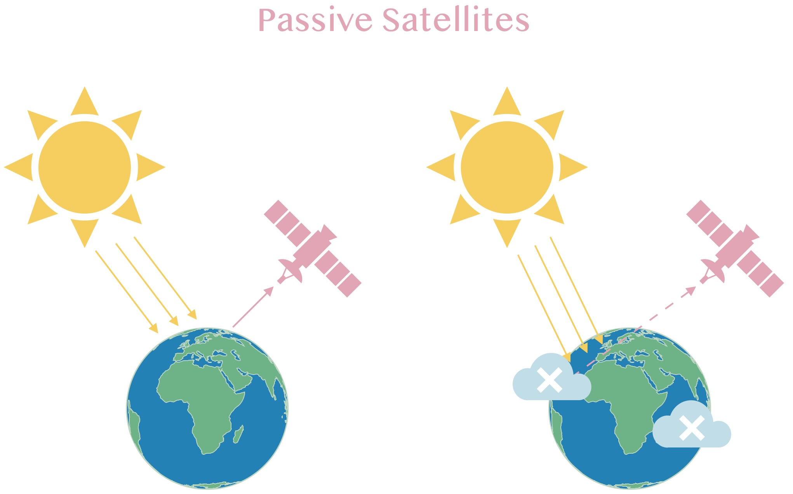
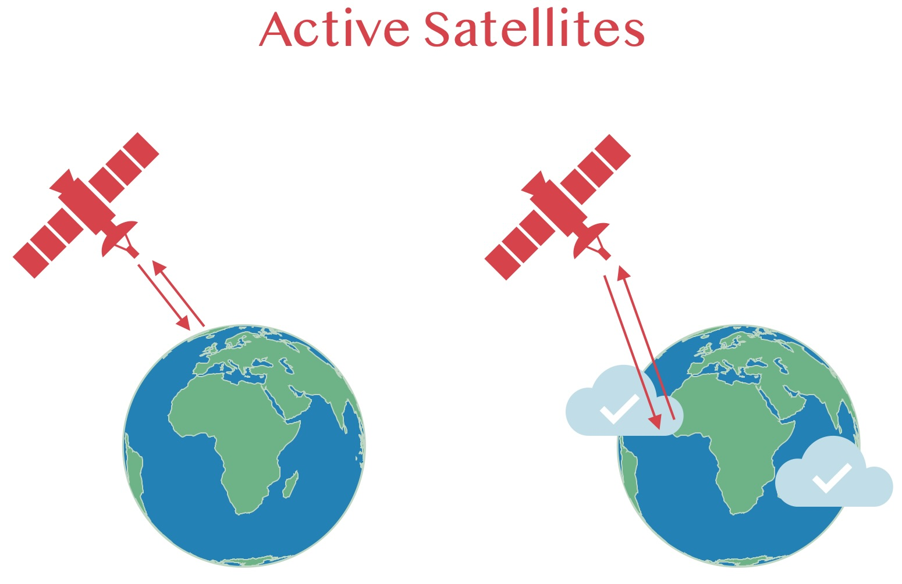
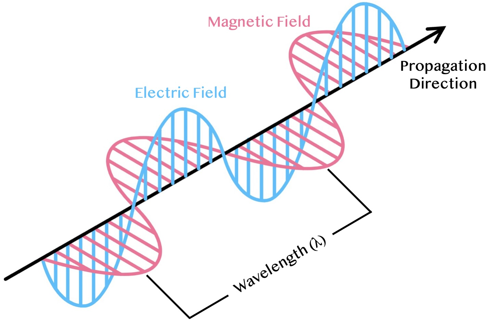
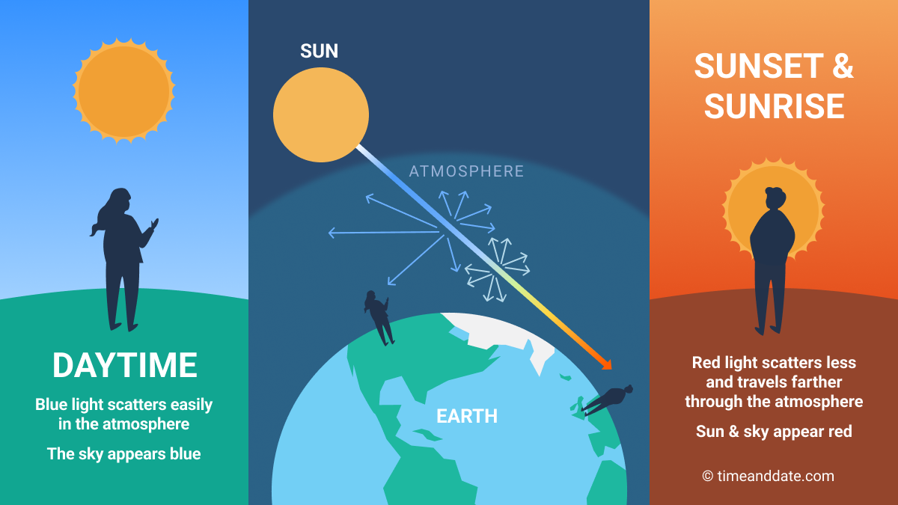
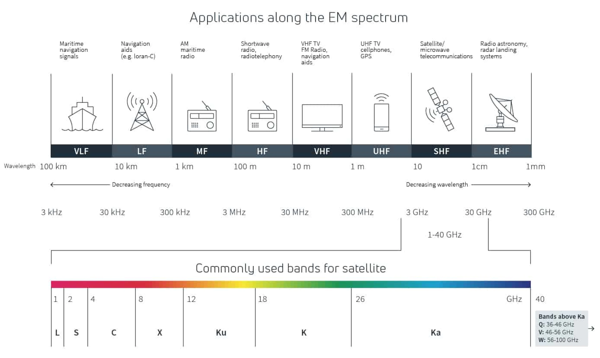

1 Week 1 - Introduction to Remote Sensing
1.1 Summary
The concept of remote sensing is as clear as the name suggests; it is “sensing” ie: observing certain features of the Earth from a distance, often conducted through the aid of satellites. By exact definition it is: “the process of detecting and monitoring the physical characteristics of an area by measuring its reflected and emitted radiation at a distance” (USGS 2024).
Spatial data scientists, among many other analysts, are taught to use this data which enables them to conduct analysis and gain geographical insight of a particular study area. This can involve topology, weather conditions, density of buildings, how developed an area is, and many more.
1.1.1 Passive vs. Active Satellites

There are two types of satellites that have been designed for Earth Observation known to Remote Sensing. The diagrams illustrate the differences between the functions of these satellite types. Passive satellite sensors are designed to reflect energy from the Sun, where its’ energy is distributed and sensed as electromagnetic waves.
Examples of passive sensors include the following:
Landsat 8
Sentiel-2
Aqua (MODIS)
Planetscope (Dove)
Worldview-4
Pleiades

Active satellite sensors are designed to emit electromagnetic waves which then waits to receive information. These particular sensors are able to “see through” clouds, volcanic ash and other atmospheric conditions, and are also able to collect data during the night.
Examples of active sensors include the following:
SAR (Synthetic Apeture Radar)
LiDAR (Light Detection and Ranging)
Sentiel-1
RADARSAT-2
1.1.2 Electromagnetic Radiation (EMR) - Waves
Electromagnetic waves are three-dimensional in terms of the vertical movement of the electric field (blue), the horizontal movement of the magnetic field (pink) across a particular direction (as shown in the diagram below). These wavelengths come in different sizes creating an electromagnetic spectrum which can indicate the type of radiation emitted towards the Earth. Passive satellite sensors tend to operate in the visible, infrared, thermal infrared and microwave sections of the electromagnetic spectrum (NASA 2024), whilst active sensors operate on microwave and radio wavelength sections (ESA 2024).

Image Source: created through Canva
1.1.3 Atmospheric Scattering
The energy emitted from the Sun is scattered into the atmosphere as particles. The smaller wavelengths scatter across the Earth’s atmosphere, whilst longer wavelengths are absorbed and reflected back.

1.1.4 Resolutions
There are four types of resolutions that need to be considered in remote sensing. One of the more obvious ones relate to spatial resolution which determines the size of each pixel in an image. In this way, you are selecting the geographic scale of the satellite image where lower range of meters implies a high-resolution image, as it is recorded from the closest capturing point (zoom level) to Earth observation, whilst the higher kilometer range indicated a lower-resolution image.

The other three definitions have been provided by NASA Earthdata (2024)
Spectral - “the ability of a sensor to discern finer wavelengths”. This implies the resolution should have more or narrower bands.
Temporal - “the time it take for a satellite to complete an orbit and revisit the same observation data”.
Radiometric - “the amount of information in each pixel…the no. of bits representing the energy recorded”.
1.2 Applications

Image source: Viasat (2024)
The image above illustrates how different types of devices and technologies can operate on different wavelength frequencies, and thus correspond to a certain Hertz range. Satellites are able to capture different wavelengths, and this is determined on which bands are used for analysis.

Image source: Viasat (2024)
According to Patino & Duque (2013), the applications of remote sensing have advanced to benefit urban planning, as it can be implemented in research that involves the following: population density estimation, house-value modelling, informal settlement detection, land surface temperature, vegetation cover, soil quality detection etc, all of which can cause additional social impacts due to its relation to the urban environment. Much of this data obtained can be integrated into both local and national policies, which contribute to the urban development of a given area.
Zhao et al. (2019) reviewed nighttime light observation, which is enabled through observing active satellite sensors. Their study looked at the DMSP-OLS satellite (Defence Meteorological Satellite Programme - Operational Linescan System) where the photomultiplier tube (PMT) is used for detecting cities, fires, fishing boats and moonlit clouds. According to the NCEI (National Centre for Environmental Information), this type of satellite uses “visible and infrared sensors that collect images globally across a 3000km swath, twice a day”. This data also provides both solar and lunar information, which enables nighttime observations to be recorded according to the time period of intended detection. Despite the obvious benefit of this satellite being able to account for nighttime records, one of the drawback on this data is the “percent frequency of cloud-free light detections with no brightness information”. Zhao et al. (2019) have argued that this factor complicates the research of human activities during nighttime detection.
1.3 Reflection
There were a lot of interesting concepts introduced this week. I particularly enjoyed learning about the different types of sensors that operate on satellites, and the difference in types of resolution available to view and how this can alter the perspective of the area observed. I wasn’t aware of the amount of components that are require for remote sensing, despite the assumption of the complexity of satellites. I was particularly interested in discovering the applications of active sensors, as they can detect during the night and through clouds, which opens up a lot of research opportunities. I was interested in learning the different types of resolutions that are taken into account when processing satellite images.
Based on the concepts introduced above, this made me realise that remote sensing can be a useful tool in spatial analysis as there are many features that can be used and adjusted such as the resolution type and scale that alter the way in which certain areas and geographical characteristics can be analysed. I don’t know yet whether I will be implementing remote sensing in my work in the future, but if in any case I do, I’m sure it would add an insightful perspective to my analysis which is equally visually stimulating.
1.4 References
NASA Earthdata (2024) https://www.earthdata.nasa.gov/learn/backgrounders/remote-sensing#:~:text=Resolution%20plays%20a%20role%20in,spatial%2C%20spectral%2C%20and%20temporal.
Patino, J.E. & Duque, J. C. (2013) A review if regional science applications of satellite remote sensing in urban setting. Computers, Environment and Urban Systems. 37, pg 1-17. [Available Online] Accessed via: https://www.sciencedirect.com/science/article/pii/S0198971512000567
Time and Date (2024) https://www.timeanddate.com/astronomy/red-sunset.html
Viasat (2024) https://news.viasat.com/blog/scn/radio-waves-and-how-satellites-use-them
Zhao, M. et al. (2019) Applications of Satellite Remote Sensing of Nighttime Light Observations: Advances, Challenges and Perspectives. 2 11(17), pg 1-35. [Online] Available via: https://www.mdpi.com/2072-4292/11/17/1971